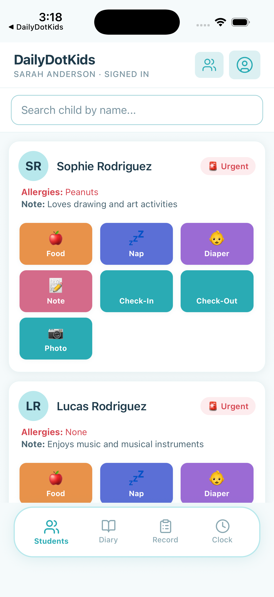
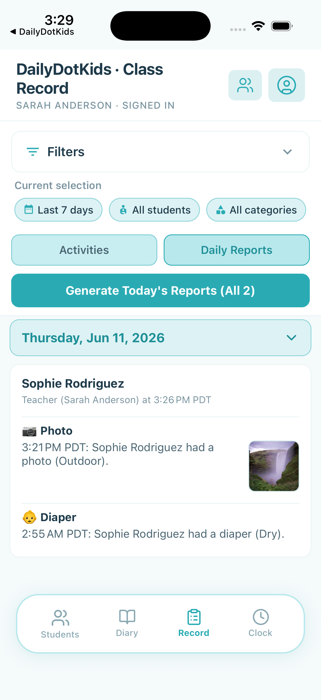
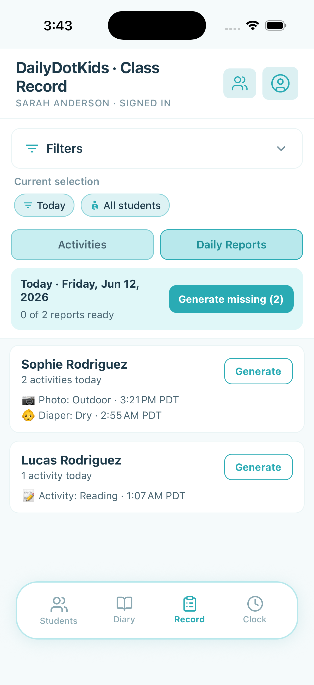
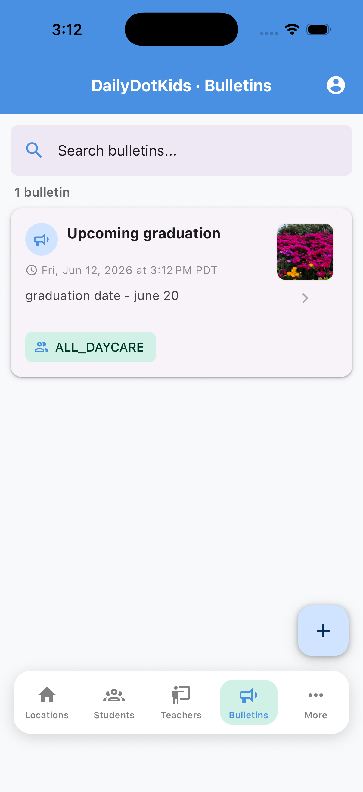

DailyDotKids
10-minute overview
You don't have time for another complicated system.
Most owners we talk to already juggle paper sheets, group texts, and software that feels built for billing — not for teachers on the floor or parents who just want to know their child is okay.
DailyDotKids is built around how daycares actually run: quick classroom logging, owner control without micromanaging, and updates families actually read.
~2 min · No pitch — just whether this fits your center
Why centers switch
Paper, typical apps, and what we set out to fix
|
Paper & texts |
Typical daycare software |
DailyDotKids |
| Teacher daily work |
Clipboards, rewrite at pickup, notes get lost |
Often many screens — training takes weeks |
3 taps from class roster; diary for shift handoffs |
| Classroom tablet |
N/A — still paper at the desk |
Shared login friction between teachers |
PIN switching; browse diary without re-login |
| Owner / admin time |
Chase sheets, answer parent texts all day |
Heavy setup; billing-first dashboards |
Invite by code; owner delegates, keeps control |
| Parent updates |
Verbal at pickup or scattered texts |
Delayed digests or separate parent portals |
Live feed, photos, bulletins in one app |
| Center size |
Same chaos at 6 kids or 60 |
Often priced & designed for large chains |
Home daycare to multi-location — same flow |
~2–3 min · You're not missing features — you're missing friction-free daily use
What a normal day looks like
Teachers tap. Parents see. You oversee — without the paperwork pile.
Teachers: Log in 3 taps · no binders · shared tablet or personal phone
Diary: Handoff notes between teachers in the same class
You: Rosters, categories, team permissions — home or multi-site
Parents: Live updates, saved photos, bulletins, kid profile edits
Predefined categories on day one. Customize later if you want. Invitation codes — no IT project.
~2–3 min
The point
Software that stays out of the way
The goal isn't another platform to manage. It's replacing the paper you're tired of losing, the texts you're tired of sending, and the apps your teachers won't use because they're too slow.
1
Classroom
Less typing · more time with kids
→
2
Families
Trust without you repeating the day
→
3
Your desk
Control without living in the app
If that sounds like what you've been piecing together with paper and workarounds — the next slides walk through each app. Stop here if you're short on time.
~2 min · End of 10-minute overview
If you have a few more minutes
How each app works
Optional detail — skip to the end anytime.
Teacher App
Built for the classroom — not the back office
Low friction. Easy to use. Focus stays on the kids.
- 3-tap logging — meals, naps, photos, moods, check-in/out
- Class roster first — start from the kids in front of you
- Quick sign-in — invite code, Face ID / fingerprint
- Minimal typing — tap, short note, back to children

Click to enlarge Click to enlarge
Click to enlarge
Teacher App
Ditch the paperwork — no clutter, no lost notes
- No binders — everything in the app
- Nothing lost — tied to child and date
- Reports in seconds — not rewritten by hand
- Searchable history — by date, student, category

Click to enlarge
Click to enlarge
Teacher App
Personal phone or shared classroom tablet
Individual device
- Face ID / fingerprint unlock
- Always in your pocket
- Personal clock-in and logging
Shared classroom tablet
- PIN switching — no password re-entry
- Auto-lock when idle
- Clock in/out on shared tablet
 Click to enlarge
Click to enlarge Click to enlarge
Click to enlarge
Teacher App
Class diary — share notes across the teaching team
- Timestamped entries per student
- All teachers in the class see the same diary
- Shift handoffs without sticky notes
- Admins review alongside activity history
 Click to enlarge
Click to enlargeClick to enlarge
Admin App
Owner & admin — every center size
- Owner: full org visibility
- Admin: scoped to assigned locations
- Multi-location or home daycare
- Same simple flow either way
 Click to enlarge
Click to enlarge Click to enlarge
Click to enlarge
Admin App
The owner controls who can change what
- Invite admins, assign locations
- Delegate device, categories, classes
- Invitation codes for staff & families
 Click to enlarge
Click to enlargeClick to enlarge
Admin App
Predefined categories — customize when ready
- Day-one defaults — meals, naps, photos, moods
- Category Management — add, edit, reorder
- Owner decides who can change them

Click to enlargeClick to enlarge
Parent App
Stay connected throughout the day
- Live updates as activities happen
- Media downloading to photo album
- Bulletins with attachments
- Update kid info — allergies, contacts
DailyDotKids
If this matches how you wish your center already worked
We're working with a small group of centers — home-based and multi-location — to refine the product before a wider launch. No long contracts, no heavy onboarding.
Built for owners who are done chasing paper and fighting software their teachers won't open.
Speaker only · Press B to return
If they ask: “What about Brightwheel?”
We’re not here to replace your whole stack on day one
Brightwheel is a strong, widely used platform — tens of thousands of U.S. childcare programs. It’s built to be an “operating system”: billing, payments, enrollment, and parent communication at scale.
|
Where category leaders excel |
What we hear centers still struggle with |
DailyDotKids focus |
| Classroom |
Solid parent apps, established brand |
Teachers still use paper on the side, or avoid the app because it’s slow |
3-tap logging from the roster; built for the floor first |
| Shared tablet |
Common in larger centers |
Login friction between teachers on one device |
PIN switching; diary browsable between sessions |
| Owner time |
Billing & payments in one place |
Running the room still feels separate from the software |
Owner delegates access; invitation setup — no IT project |
Say: “If your current tool works and teachers use it every day, keep it. We’re for centers where the daily classroom workflow — paper, texts, or an app teachers won’t open — is still the real problem.”
 Enlarge
Enlarge Enlarge
Enlarge Enlarge
Enlarge